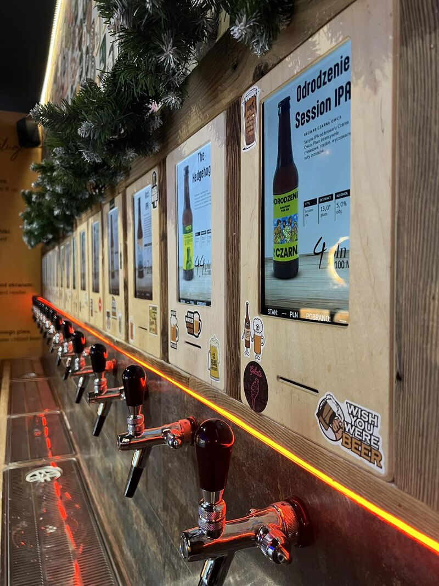

End-to-End Commercial IoT Deployment

The client aimed to create a self-service, automated pub experience where customers use prepaid RFID cards to pour their own drinks. The initial conceptual work ran into severe technical roadblocks regarding hardware reliability and software architecture.
I was brought in to take ownership of the project, re-engineer the system architecture, and deliver a robust, End-to-End (E2E) solution that could scale to 20 independent pouring stations while adhering to the client's chosen hardware ecosystem (ESP32).
Instead of relying on a single central server that could act as a single point of failure, I designed a distributed edge-computing architecture. Each tap operates as an independent node.
Each ESP32 hosts its own localized Web HMI stored in SPIFFS memory (HTML/CSS/JS). A dedicated tablet at each tap displays this interface. The background is a dynamically loaded beer banner, while an overlay displays real-time wallet balance and pouring status.
When an authorized RFID card is inserted, a relay unlocks the solenoid valve. Hardware interrupts from a flowmeter count the liquid volume in real-time, recalculating the cost and deducting it from the prepaid card. If the balance hits zero, the valve shuts instantly.
Before finalizing the PCBs and hiding the electronics inside the pub's custom woodwork, the core logic had to be flawlessly validated. The video below demonstrates the functional MVP (Minimum Viable Product) during client acceptance testing. It highlights the real-time interaction between the RFID reader, flowmeter logic, and the localized Web HMI.
Engineering Prototype: Validating hardware interrupts, RFID polling, and SPIFFS web-server latency.
The system was successfully deployed across 20 taps. The distributed architecture ensured that if one tap required maintenance, the remaining 19 continued to generate revenue. By integrating the logic directly onto the edge nodes, latency between the physical pour and the HMI update was practically eliminated, resulting in a seamless experience for the end-user.